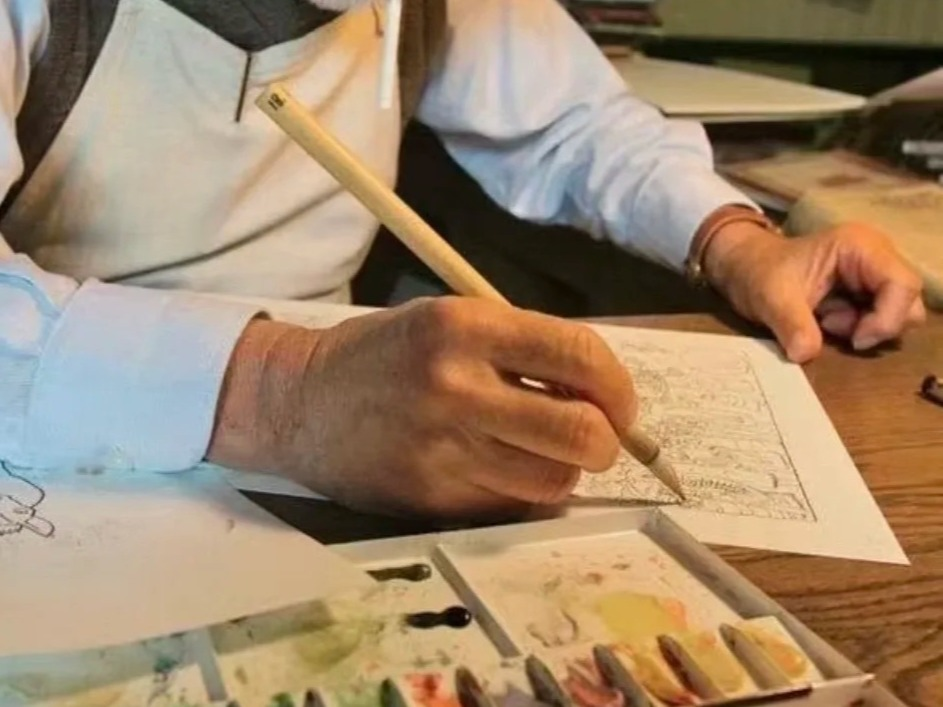
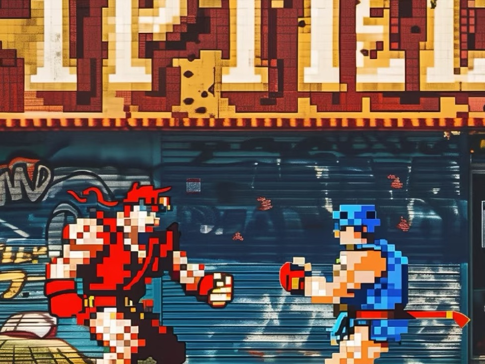
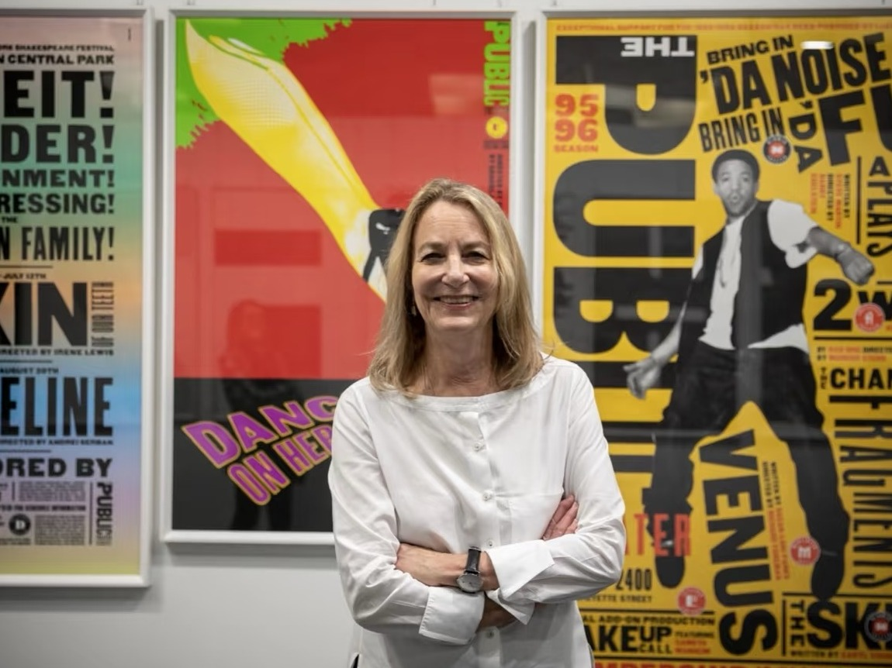
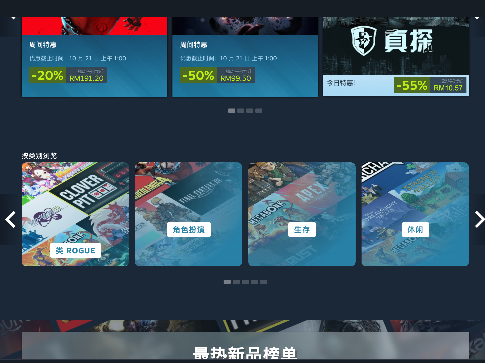
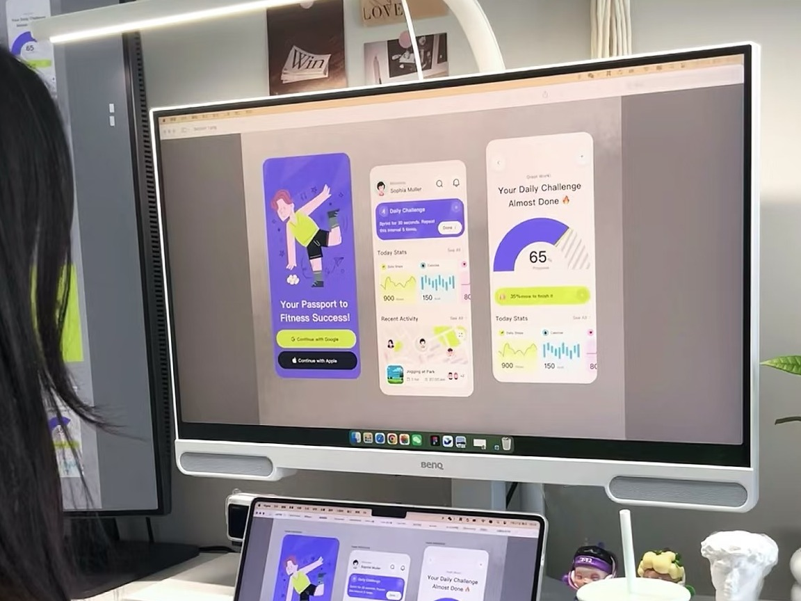

No Code Website Builder「从手作灵晕，到数字体验」
在信息技术尚未出现的年代，游戏以实体形态存在，其核心是建立在棋盘、卡牌等道具之上的规则体系。
受限于当时的生产力，这些游戏道具大多依赖手工制作，导致其流通范围有限，形态也相对固定。
然而，这种基于实体材料的交互方式，却创造了一种独特的社交场域。它要求参与者必须面对面就坐，通过直接的语言交流和肢体动作来进行游戏。
在那个依赖双手与简单工具的低科技时代，设计与制造浑然一体，核心的形态便是服务于精英阶层的手工艺品。
科技的局限带来了极度的低效，使得精美的作品成为少数人的特权，文化的传播成本高昂。
然而，这种原始的创作方式也赋予了作品无与伦比的积极面——每一件都由匠人全程掌控，被赋予了独一无二的手工温度与灵魂。

电子技术的诞生与应用，标志着游戏形态的根本性转变。首次将游戏规则从物理实体中分离，将其转化为屏幕上的动态图像与逻辑程序。
这一转变也带来双重影响，一方面，游戏失去了实体道具的触感与面对面互动的直接温度，传统玩具产业也受到冲击。
另一方面，动态化的娱乐得以进入普通家庭，大幅降低了游戏参与的门槛。
同时催生了“像素画师”等全新的数字职业，为创意领域开辟了新的方向。

工业革命的机械轰鸣重塑了设计的命运。机械化大生产使设计从制造中剥离，催生了平面设计与工业设计等独立职业领域。
传统手工艺者在机器替代中面临生存危机，设计师与实体产品的直接联系被生产线切断。
然而新的可能性也随之涌现——商业设计通过印刷技术和标准化生产走向大众日常生活
生产效率的飞跃使商品成本显著降低，设计创新进入加速发展的新阶段。

在个人电脑与互联网构筑的数字时代，游戏已演变为融合视听艺术与交互叙事的综合媒介。
当3D图形技术赋予虚拟世界以血肉，我们见证着游戏类型的爆发式增长——从开放世界到独立小品，每个小众兴趣都能找到归属。全球玩家更通过线上社群构建起超越地理疆域的虚拟社会。
然而这场技术革命亦暗藏隐忧，算法编织的"多巴胺陷阱"正在重塑我们的快感机制，快餐式游戏逐渐消解着深度思考的耐心。

在个人电脑、互联网与专业设计软件构筑的技术基础之上，设计行业经历了深刻的数字化转型。
设计师的职业形态逐步细分为UI设计、UX设计、交互设计等高度专业化的领域，整个产业的核心导向也从单纯的视觉美化转向以用户体验为中心的系统化构建。
设计工具民主化催生了全民创作浪潮，数字化修改让创新成本显著降低，但是行业也面临设计师在标准化流程中被工具化的风险，技术门槛更使得不适应数字转型者被迫边缘化。

No Code Website Builder